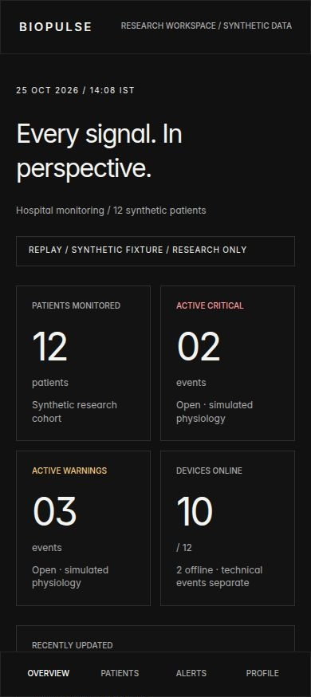
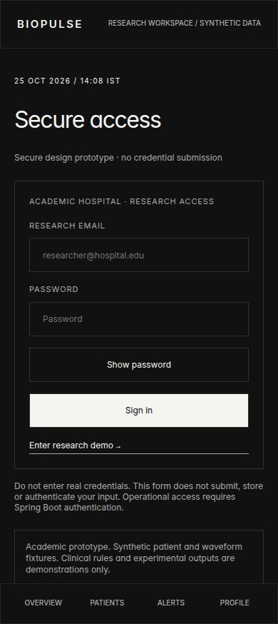
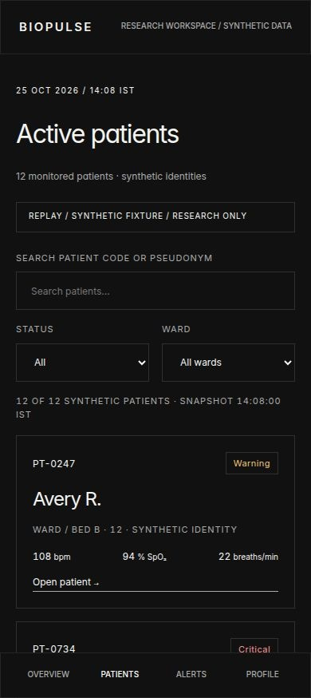
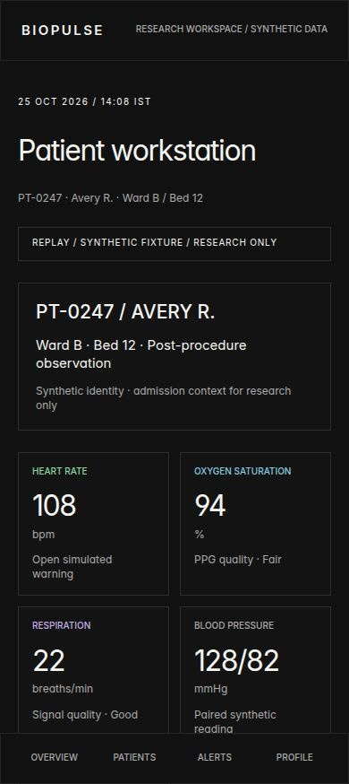
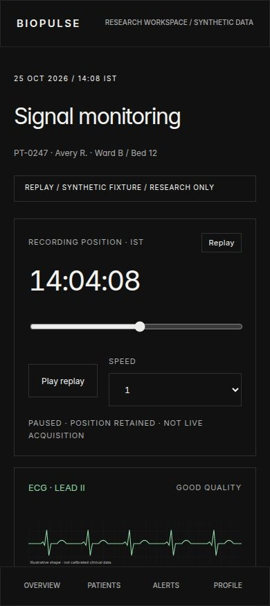
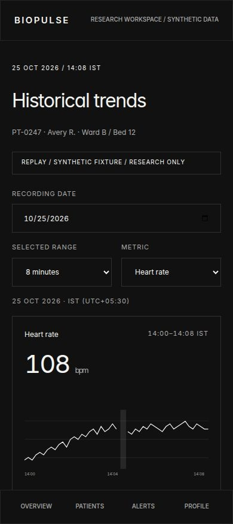
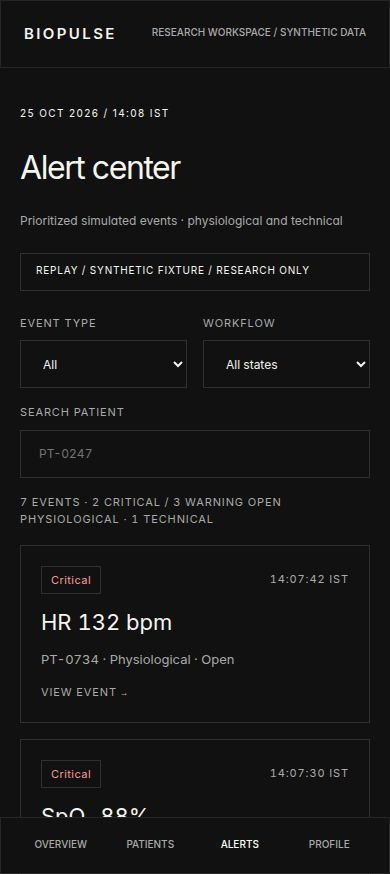
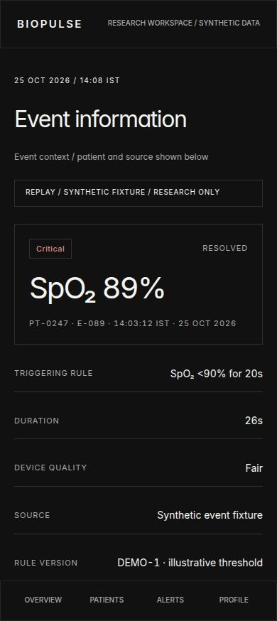
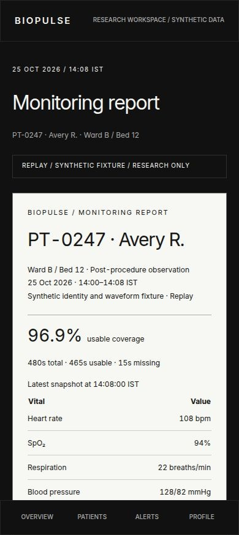
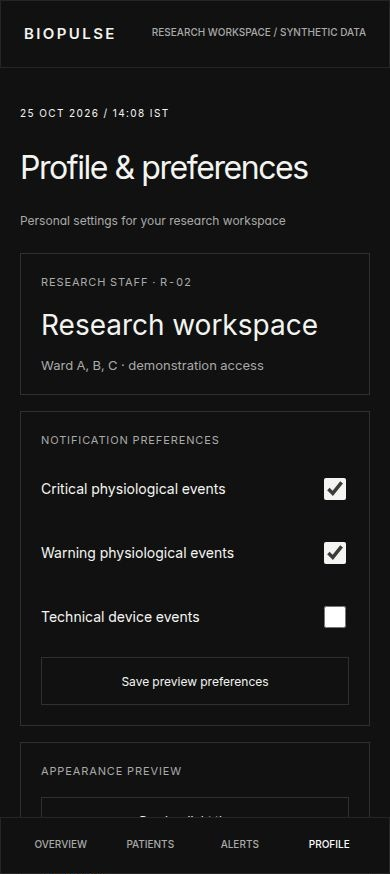

BioPulse / Framer
Open editable project · Read handoff · Runtime component source
Overview
View full screen content

Secure Login
View full screen content

Active Patients
View full screen content

Patient Detail
View full screen content

Signal Monitoring
View full screen content

Historical Trends
View full screen content

Alert Center
View full screen content

Alert Detail
View full screen content

Monitoring Report
View full screen content

Profile & Preferences
View full screen content
